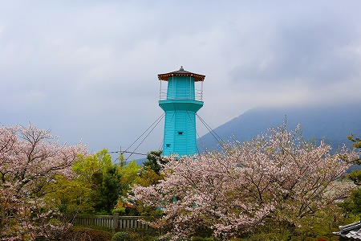
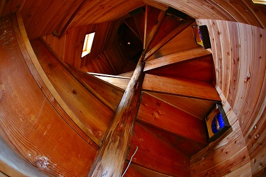
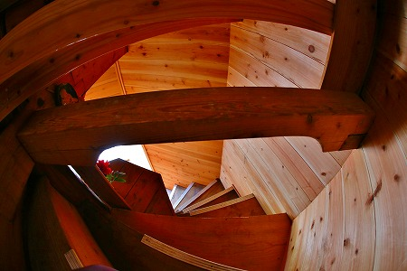

以前、訪問した長崎県島原市の
天如塔。
 西日本で唯一、二重螺旋階段による仏塔
西日本で唯一、二重螺旋階段による仏塔が無残な姿となっていたのをお伝えしたのはかれこれ10年ほど前になろうか。
（前回のレポートは
こちら）
台風のために屋根は抜け、壁は落ち、しまいには鳩の巣になってしまった天如塔であったが、
理性院大師堂天如塔修復委員会の方々が中心となって2014年、めでたく修復されたのであった。
実に素晴らしい事である。
二重螺旋階段による仏堂、といえば福島県会津若松市にある
さざえ堂が有名だ。
他にもさざえ堂と呼ばれる建物は日本に幾つか存在するが、完全な二重螺旋構造の仏塔は会津のさざえ堂だけとされていた。
そんなわけで、この建物の内部構造がどうなっているのかは個人的にはすごーく気になって仕方なかったのだが、この度修復されて内部に入れるようなので連絡してみた。
普段は公開していないのだが、お寺のご厚意で拝観させてもらうことになったのである。
ありがたやありがたや。
というわけで喜び勇んで島原に向かうのであった。
桜散る四月。約10年ぶりの島原訪問である。
天如塔に向かうと、桜の花の向こうから以前とはすっかり変わった塔が姿を現した。

おおおおお！
青い！
そして当たり前だが、屋根も壁も綺麗に修復されている。
うん、うん。良かったよお。
すっかり綺麗になったが、最初に見た第一印象である「灯台みたい…」という印象は相変わらずなのであった。

この塔が建てられた詳しい経緯は
前回のレポートを読んでいただくとして、この天如塔は島原からアジア各地に出稼ぎに行った女性であるからゆきさん達が資金援助している。
塔の周辺の玉垣には寄進したからゆきさんの名が刻まれており、今でもからゆきさんの霊を慰める石碑や卒塔婆が立っている。
この天如塔を建立した広田言証師がアジア各地で施餓鬼法要をした写真が展示されていた。
ラングーン（現ヤンゴン）の日本人墓地での施餓鬼供養。
香港の日本人墓地での施餓鬼供養。
このように明治の頃にはアジア各地に様々な日本人が居留していたのだ。
からゆきさんと呼ばれる女性たちも驚くほど広範囲に居留していたことが判る。香港、上海はおろかビルマ、インドまで。
…というわけで、いよいよ天如塔の御開帳である。
正面の扉は観音開きになっている。
開けるとこんな。
ね。いきなり不思議でしょ？
コレは以前訪問した際にも扉のガラス越しに確認できたのだが、正面から見て
左と右は別々の部屋になっているのだ。
入口は左側。右側は出口なのですよ。
内壁の大部分は新しい木材が使用されており、まるで新築のお堂のよう。
ここから先はやや判りにくい説明が続くが、我慢してついて来て欲しい。
ついでに言うと一部魚眼レンズで撮影した画像が混ざっているので判りにくさに拍車がかかっていて誠に恐縮だが、皆さんの脳内で的確に補正していただくことを切に願うばかりである。
正面左手の入り口から中に入るといきなり数段下る階段があり、半地下のような通路になる。
頭上の不動明王を拝しながら、コンクリートで塗り固められた道を進む。
しばらく進む。八角形の建物の入り口の丁度反対側の辺りで数段上り、半地下のコンクリ通路は終わる。
突き当りには地蔵菩薩が祀られており、右に折れるとそこから螺旋階段が始まるのだ。
そもそも二重螺旋階段というのは上りと下りが正反対に位置するもの。
ところがこの塔は入口と出口を正面に設けてしまったために、螺旋階段の上り部分まで半地下の通路を設けるという、設計上はあまりスマートではない方法を採用している。
例えば会津のさざえ堂などは出口は入口の真後ろにあるのでこのようなややこしい地下通路はない。
もっともその
スマートじゃない感がこの天如塔の魅力であり、この塔を作った広田師の生き様そのものを体現しているので、それはそれで素晴らしいのだが。
というわけで、早速二重螺旋の上り階段に突撃してみよう。

螺旋階段は一本の心柱を中心に展開されている。
ここで思い出すのは会津のさざえ堂はこんなに急勾配ではない、という点。
それは中心部が一本の柱ではなく、複数の柱によって構成されていたので階段（厳密にはスロープ）の角度が緩やかに取れるのだ。
（会津さざえ堂内部はこんな）
対して、天如塔の階段は滅茶滅茶
急勾配。
ほとんど這って登っていくような感覚なのだっ！
これぞ胎内巡り！ってな気分になって来ますよ、実際。
そんな道中を見守る観音様。頑張ります！
しばらく登ると頂上が見えてくる。
半地下の通路が薄暗く、途中が狭かっただけに最上部の明かりが見えた時は正直ほっとした。
まさに地獄と極楽を巡っているような感覚に陥るのであった。

そして最上部に到達する。
階段を登り切ったところには棚があり、広田師がビルマから持ち帰ったという
玉仏が安置されている。
螺旋階段の最上部を真上から見た図。
今、上ってきた階段は↑画面の上から手前になる。丁度時計回りに上ってきたことになる。
そこから画面左下にある階段を今度は反時計回りに下る事になるわけ。判りますか？
で、最上部に到達した御褒美は玉仏だけじゃないのだ。
↑画面の下の部分にチョットだけ扉が半開きになってるのがお判りいただけるだろうか？
そう、そこから外の展望台に出ることが出来るのだ！
外に出ると島原の市街が手に取るように見える。
薄暗く、閉鎖的な螺旋階段から外に出ると爽やかな春風が吹き、まさに極楽。
正面に見えるのは雲仙普賢岳。
1991年の噴火の際はこの島原市街も相当な打撃を受けたとニュースで見たが、実際に見てみると、成程本当に目の前にある山だったのだな、と実感した。
展望台は下から見るとこんな感じ
中から見るとこんな感じ。
中央の扉とは別に採光のために二本のスリットが設けられている。
扉の右には小さな躙り口のようなモノがあったが、用途は不明だ。

さて、気を取り直して階段を降りよう。
勿論、登り同様急な階段である。
降り階の部分には芯柱とは別にもう一本柱が通っている。
構造の補助なのか、手摺代わりなのか良く判らない。
登り階段の蹴上部分の真裏には
十六羅漢のレリーフが連なっている。
副柱が数本あるのがお判りいただけるだろうか。

そんなこんなでやっと下まで降りてきた。
↑右手に見えるのが先ほど入るときに見えた観音開きの左側の扉。
中央に見える柱は上部の八角の塔の隅柱。
階段を降りてきたところはこんな。
地獄のような暗い通路に始まり、胎内巡りのような階段で観音サマやお地蔵さんを拝しながら上り、ビルマ渡来の玉仏を拝み、展望台で眺望を楽しみ、羅漢サマを拝みながら降りてくる。
…なんて盛りだくさんな塔なんだろう！
素晴らしすぎて何度も行ったり来たりしちゃいましたよ。
で、塔の外に出ると入り口の逆サイドにも扉が。
開けてみたら、役行者（えんのおつぬ）の像が安置されていた。
それにしても、これだけ大きなスペース、どこにあったっけ？
多分、最初の半地下通路の上にあった不動明王の棚の真後ろ辺りか。
外部と内部、上りと下りが複雑に入り組んだ立体迷宮のような建物であった。最高！
改めて塔を見上げながら、十年前に見た無残な姿を思い出していた。
絶望的な状況を克服し、修復された
理性院大師堂天如塔修復委員会の方々には心から感謝と尊敬の念を表します。
さざえ堂ジャンキーとしては、何というか、ここ数年で一番気持ちがあがった参拝でしたよ。
超☆満☆足！
参考文献；島原のからゆきさん 倉橋正直 共栄書房
2016.04.